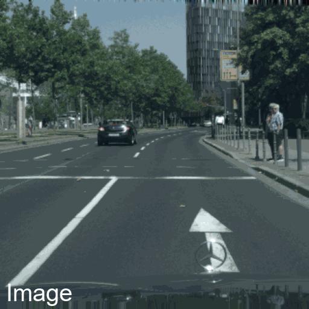
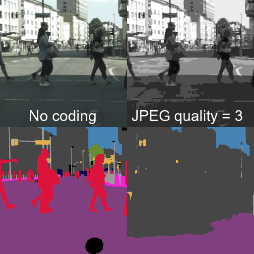

|
I am a PhD student in computer vision at the Visual Inference Lab in Technical University of Darmstadt. Supervised by Prof. Stefan Roth my research focuses on unsupervised visual scene understanding. I received a master's degree in Computational Engineering with a focus on deep learning and computer vision. At the Visual Inference Lab I conducted research on multimodal learning as well as on semantic scene understanding with limited supervision, advised by Shweta Mahajan, Nikita Araslanov and Prof. Stefan Roth. Previously, I obtained a master's degree in Mechanical Engineering from TU Darmstadt. Email | CV | Twitter | Google Scholar | Github |

|
| Sep | 24 | Our paper "Boosting Unsupervised Semantic Segmentation with Principal Mask Proposals" got accepted at TMLR. |
| Jul | 24 | I will be attending the International Computer Vision Summer School (ICVSS) 2024! |
| Jun | 24 | Our paper "A Perspective on Deep Vision Performance with Standard Image and Video Codecs" won the best student paper award @ AIS Workshop (CVPR 2024). |
| Jun | 23 | Our paper "Semantic Self-adaptation: Enhancing Generalization with a Single Sample" got accepted at TMLR. |
| Jun | 22 | I started as a PhD student with Prof. Stefan Roth at the Visual Inference Lab in Technical University of Darmstadt! |
| I am interested in machine learning and computer vision, especially unsupervised scene understanding. |
|  |
Oliver Hahn, Nikita Araslanov, Simone Schaub-Meyer, Stefan Roth TMLR 2024 Paper | Project Page | Code |
|  |
Christoph Reich, Oliver Hahn, Daniel Cremers, Stefan Roth, Biplob Debnath CVPRW 2024 (Best Student Paper Award @ AIS Workshop) Paper |

|
Sherwin Bahmani*, Oliver Hahn*, Eduard Zamfir*, Nikita Araslanov, Daniel Cremers, Stefan Roth TMLR 2023 Paper | Video | Code |
|
|